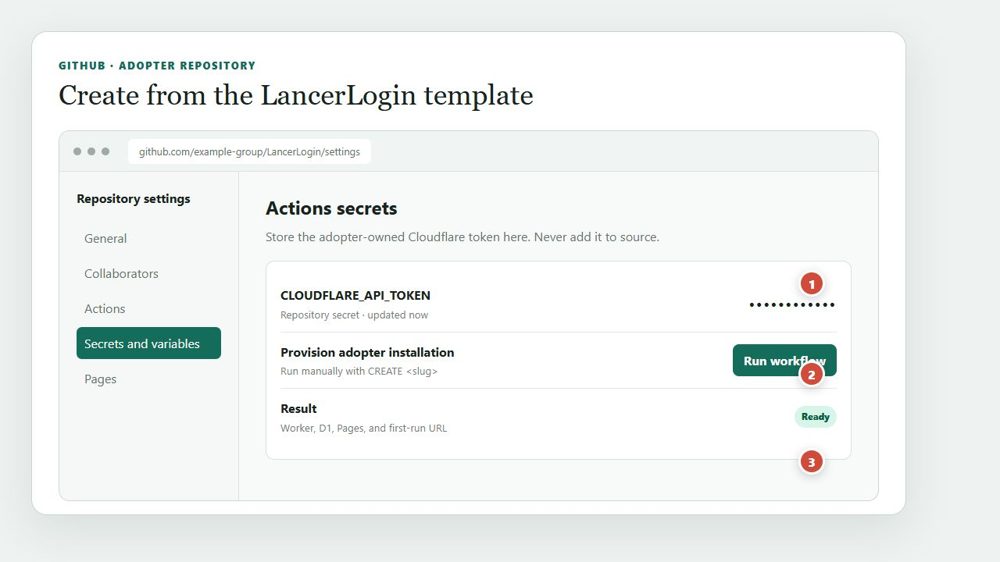
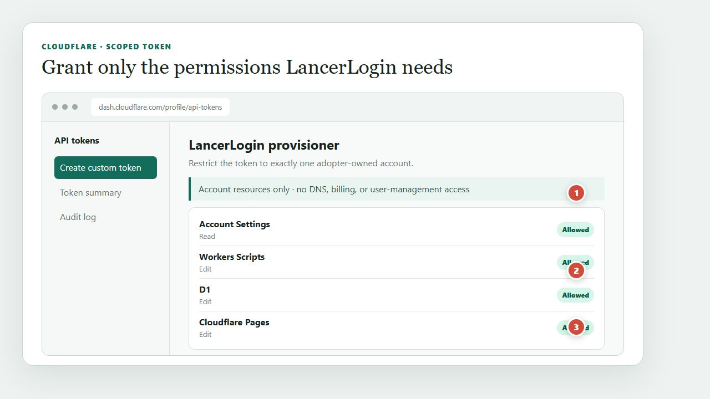
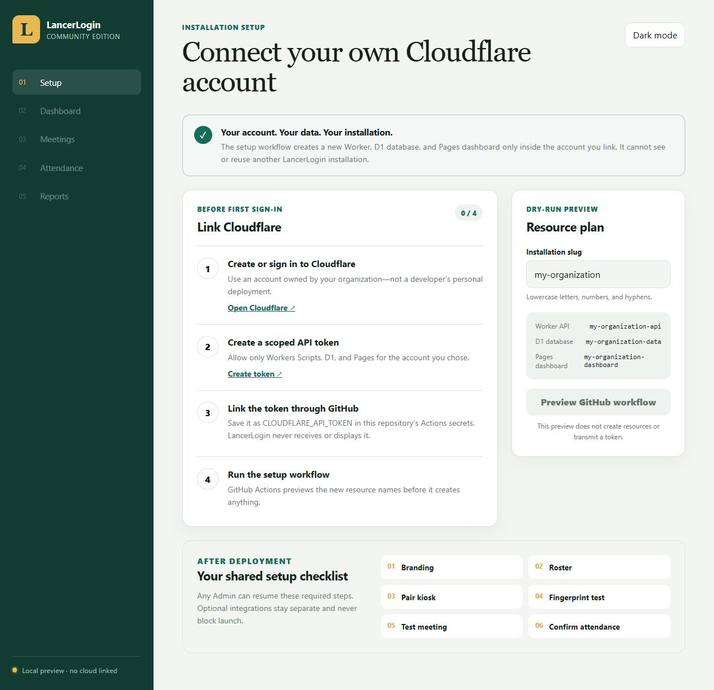
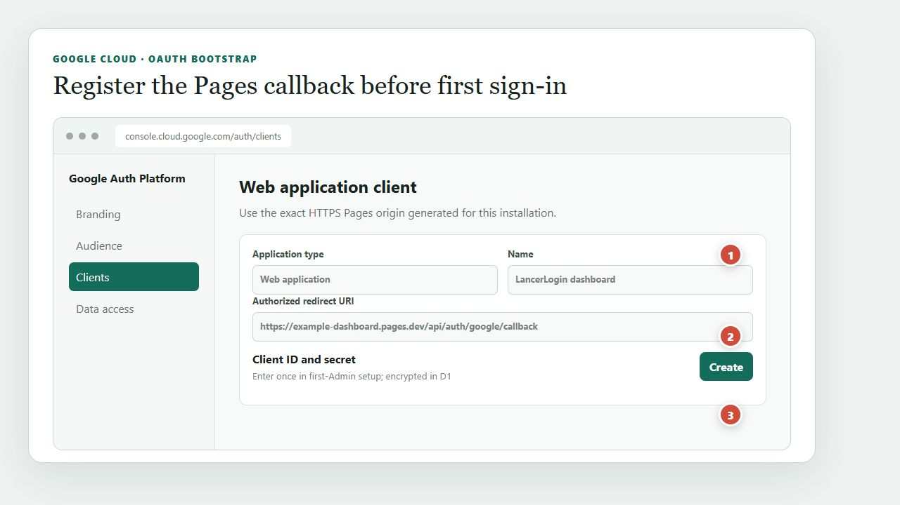

1. Link your Cloudflare account through GitHub
- Create or sign in to a Cloudflare account owned by your organization.
- In Cloudflare, create an API token restricted to exactly one account with Account Settings read plus Workers Scripts edit, D1 edit, and Pages edit.
- In your new LancerLogin repository, open Settings › Secrets and variables › Actions and add the token as
CLOUDFLARE_API_TOKEN. Never paste it into the dashboard. - Open Actions › Provision adopter installation › Run workflow. Choose Create, enter a lowercase slug, and type
CREATE <slug>. - The workflow discovers the single account from the token, refuses ambiguous tokens and resource-name collisions, then creates D1, the Worker, and Pages. Open the stable Pages dashboard link from the workflow summary.

Store one scoped secret
Add the adopter-owned token as CLOUDFLARE_API_TOKEN; its value stays masked.
Run intentionally
The manual workflow requires the resource slug and typed confirmation before it provisions.
Follow the summary
The successful run reports the stable Pages URL and the resources it created.

Restrict and discover
Account Settings read lets the Action identify the one account to which the token is restricted.
Allow the backend
Workers Scripts and D1 edit permissions let the workflow deploy code and schema.
Allow the dashboard
Pages edit permission creates and updates the adopter’s static dashboard project.

Adopter-owned account
The workflow learns the account only from your scoped token.
Token stays in GitHub
The browser never asks for or displays the Cloudflare token.
Preview names first
The slug deterministically names the new Worker, D1 database, and Pages project.
2. Create the first Admin
Choose local username/password, Google OAuth, or both. Local passwords require at least 12 characters and are stored as salted scrypt hashes. The dashboard and API use one Pages origin through a generated proxy, so strict session cookies are not third-party cookies.
For Google, create a Web OAuth client and add this exact authorized redirect URI:
Your Pages dashboard URL › /api/auth/google/callback
Enter the client ID and secret in the first-Admin setup form when Google or both methods are selected. This avoids a first-login dependency: the secret is encrypted before storage and is never displayed again. After signing in, an Admin can test, rotate, or remove it under Optional integrations → Google OAuth.

Choose a web client
Create a Web application client for the dashboard rather than a desktop client.
Copy the exact callback
Use the HTTPS Pages origin followed by /api/auth/google/callback.
Enter credentials once
The first-Admin form encrypts both values; saved secrets are never shown again.
3. Finish the shared checklist
- Branding
- Roster (optional email and Discord user ID columns)
- Pair kiosk
- Fingerprint test
- Test meeting
- Attendance confirmation
Any Admin can resume the checklist. Once complete it hides, but remains reachable from Setup. Google, Resend, and Discord are separate and skippable.